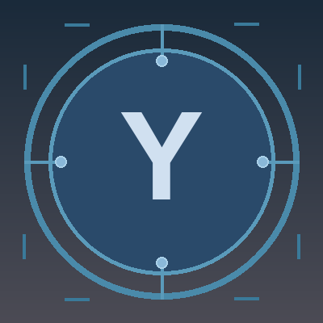

用 AI 帮助自己更清楚地理解人、关系和行动
这个方向不是做心理诊断，也不是制造情绪对立，而是记录普通人在工作、沟通和自我调节中如何借助 AI 复盘问题、识别模式、做出更稳的下一步。

👋 你好，我是
结合质量系统方法、工业场景理解、AI coding 工具与自我观察日志
用系统化思维把复杂问题转化为可交付的工具、可复盘的文章和可持续的行动
我长期关注工业数字化与质量系统改进，具备从现场问题、客户反馈到结构化闭环的实践经验。
我熟悉工业控制与流程工业相关场景，能够运用 8D 方法、SPC 统计过程控制、FMEA 失效模式分析等工具，把复杂问题拆解为可追踪、可复盘、可持续优化的行动。
我也在持续使用 AI coding 工具，把质量管理、沟通协作和个人效率场景产品化，例如 8D 质量分析工具与职场回复器 PWA。
近期我开始把个人日志、AI 辅助分析和心理自助主题结合起来，尝试在符合网络政策环境与隐私边界的前提下，写出更真实、可读、可复盘的公开文章。
熟悉流程工业、控制系统与质量交付链路，能够在业务语境中识别关键风险
熟悉质量管理体系标准，能够将体系要求落地为可执行的质量流程
熟练运用主流质量工具进行根本原因分析、过程监控与风险预防
用日志上下文和 AI 辅助，把情绪、沟通和自我调节经验整理为合规、克制、可复盘的文章
我正在用 Codex 和个人日志上下文辅助选题、梳理结构与校准表达，把真实经历转化为合规、克制、可持续更新的内容。
这个方向不是做心理诊断，也不是制造情绪对立，而是记录普通人在工作、沟通和自我调节中如何借助 AI 复盘问题、识别模式、做出更稳的下一步。
文章会主动脱敏具体人物、组织和可识别细节，避免煽动性表达；涉及心理主题时坚持经验分享和自助工具视角，不替代专业医疗建议。
重点关注 AI 辅助情绪复盘、职场沟通、边界感、自我证明冲动、关系反馈和内容创作方法，让文章既有个人温度，也有可执行结构。
保留真实情境，但先做隐私和风险过滤。
让 Codex 帮助提炼主题、冲突、情绪和行动线索。
检查事实边界、政策风险和是否过度投射。
输出可读文章，并持续观察读者反馈。
如果您关注工业数字化、质量系统改进，或希望了解我如何使用 AI coding 工具交付真实 Web 产品，欢迎随时联系。 也欢迎交流 AI 辅助写作、心理自助内容和个人品牌长期建设。